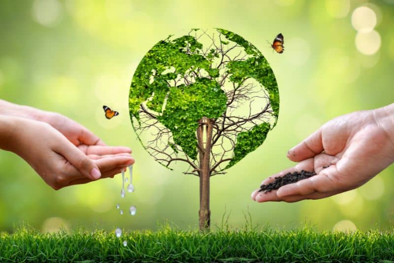

Bienvenido a EcoEducador
Una plataforma diseñada para enseñar sobre el cuidado del medio ambiente de manera accesible para todos.
Recursos Educativos
Conservación del agua
Aprende cómo ahorrar agua en tu hogar con estos simples consejos.
Infografía: Reciclaje básico ♻

Guía visual para separar correctamente tus residuos.
Juegos Interactivos
Clasifica los residuos
Arrastra cada objeto al contenedor correcto:
Consejos Prácticos
Calculadora de Ahorro de Agua
Descubre cuánta agua puedes ahorrar con pequeños cambios:
Energía en tu Hogar
Energías Renovables
Descubre cómo las energías renovables pueden transformar nuestro futuro y proteger el medio ambiente.
Calculadora de Consumo Eléctrico
Calcula cuánta energía consumen tus aparatos:
Conceptos de Física Eléctrica
La energía eléctrica se mide en kilovatios-hora (kWh).
Fórmula: Energía (kWh) = Potencia (kW) × Tiempo (h)
1 kW = 1000 Watts
El consumo eléctrico depende de la potencia del aparato y el tiempo de uso.
♻️ Consejos sencillos para ahorrar y reciclar
- üíß Cierra la llave mientras te cepillas los dientes: Ahorras hasta 6 litros de agua cada vez.
- üîå Desconecta aparatos que no est√©s usando: Aunque est√©n apagados, muchos siguen consumiendo energ√≠a.
- üõçÔ∏è Lleva tu propia bolsa al mercado: Evitas el uso de bolsas plásticas que tardan cientos de a√±os en degradarse.
- üì¶ Reutiliza cajas o frascos de vidrio: Sirven para guardar objetos, comida o incluso como decoraci√≥n.
- üëö Dona o transforma tu ropa vieja: Puedes hacer trapos, bolsos o simplemente dárselos a quien los necesite.